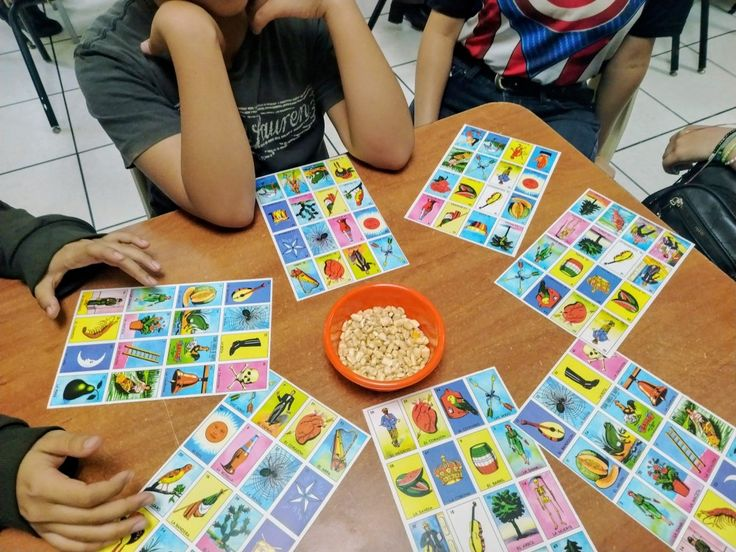

La Lotería es un juego de mesa tradicional mexicano similar al bingo, pero con imágenes en lugar de números. Se juega con un mazo de 54 cartas ilustradas y cada jugador tiene una plantilla o "tabla" con 16 de esas imágenes.
Un jugador hace de "gritón" o cantor y va sacando cartas al azar del mazo, anunciando cada figura con una rima o frase característica.
Los jugadores buscan la figura mencionada en su tabla y la marcan con un frijolito. El primero que complete su tabla grita "¡Lotería!" y gana la ronda.
En algunas variantes, se puede jugar "a línea", "a cruz" o "a tabla llena". El gritón también puede ganar si nadie completa la tabla.
👥 Jugadores: De 2 a 20 participantes.
⏱️ Duración: Cada ronda 5-15 min. Partida: 30-60 min.
🎯 Objetivo: Completar la tabla antes que los demás.
🧰 Materiales: Mazo de 54 cartas, tablas y fichas.
• Atención total: Escucha con cuidado las rimas.
• Prepara tus fichas: Ten suficientes a la mano.
• Memoriza las rimas: Identifica rápido las figuras.
Encuentra los pares de cartas. ¡Memoriza su posición!